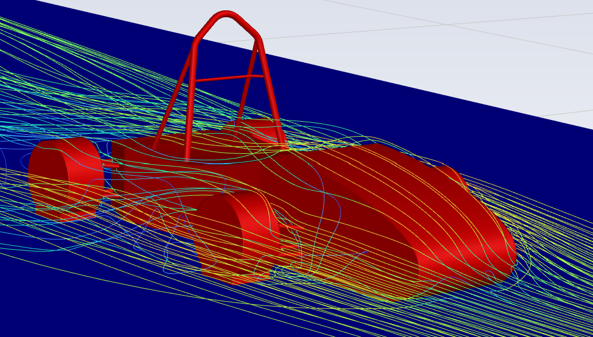
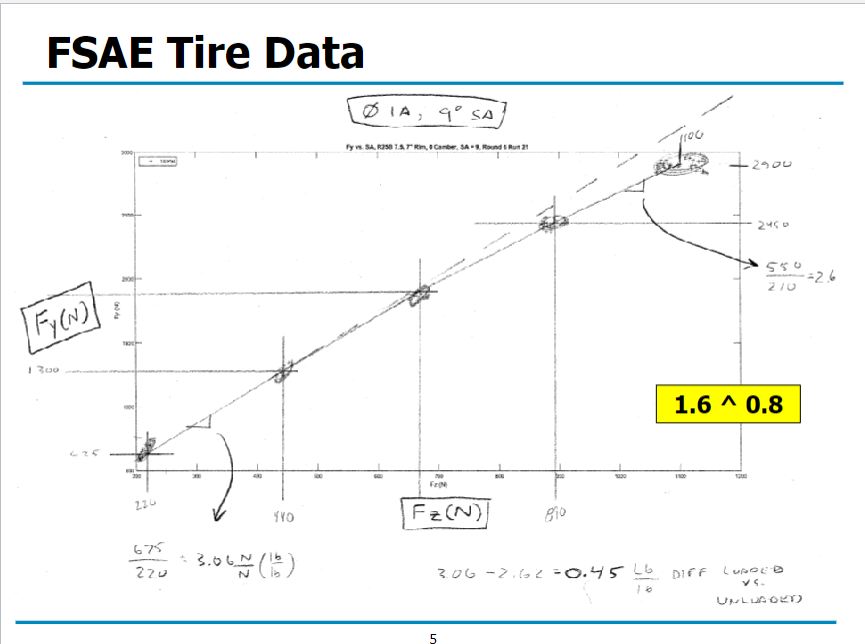
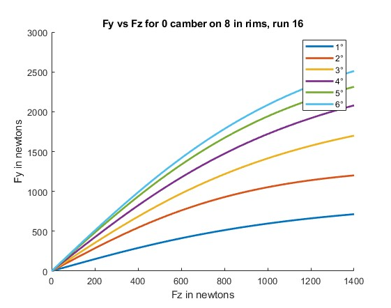
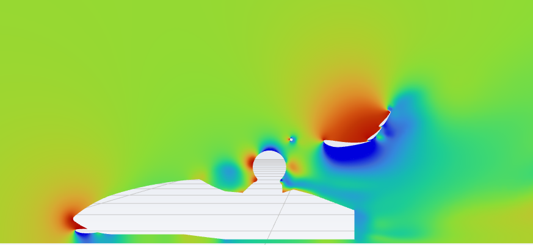
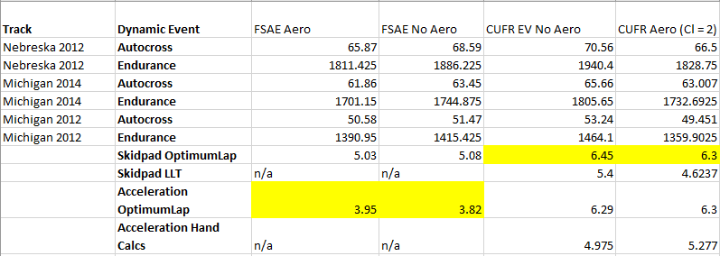
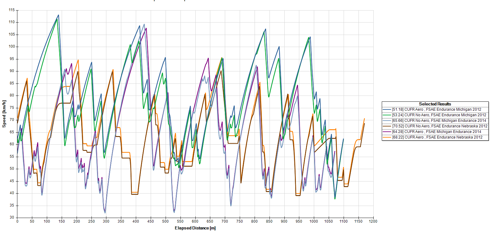

Pathlines Plot
In this project, I attempted to analyze the effects of adding downforce producing elements to an FSAE car. Shown here is a simplified version of Columbia's 2023 EV car.

Tire Data
The first step is to understand what effect increasing downforce in the Fz direction will have on Lateral Load Transfer in the Fy direction. This plot is taken from Milliken's RCVD book.

Matlab Analysis
In this code, I plotted various tire slip angles to understand their Fz versus Fy relationship. I used the assumption that the highest Fz to Fy ratio was the best and that was at a tire slip angle of 6.

Pressure Values
Next, I imported a full FSAE car with downforce producing devices into Ansys Fluent. The photo here is of the pressure contours of each individual part from a 2D perspective. Note, I learned how to do this CFD analysis on my own, I found this tutorial from Ansys helpful:


Hand Calculations, OptimumLap
The following step was to run hand calculations to see if adding these downforce values to Columbia's FSAE car would show significant improvement in lap times at each of the dynamic events. I used OptimumLap's pre-built FSAE tracks and previous competition scores to validate the results.

Final Results
While this project had some major simplifications in terms of CAD model, analysis methods, and software, it was a good step towards creating a framework for Aerodynamic Analysis. This plot shows that increasing downforce will speed up lap times. A paper I wrote on this project is shown here: 📄